Starters
Click on the Image to Reveal the Recipe
 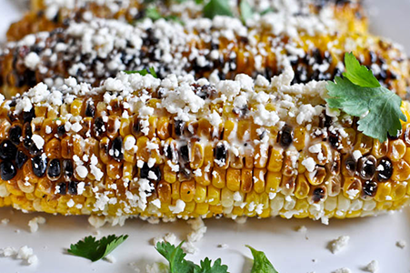
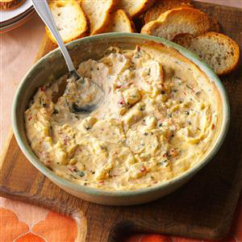
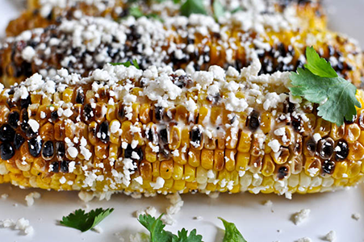
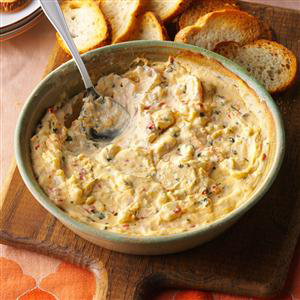
A Three Course Meal at Your Finger Tips
Select a Recipe for a Starter, Entree, and Dessert
Click on the Image to Reveal the Recipe
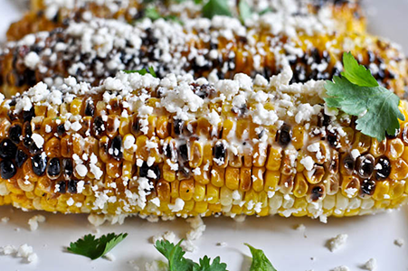
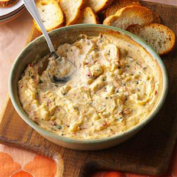
Click on the Image to Reveal the Recipe
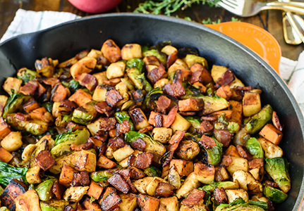 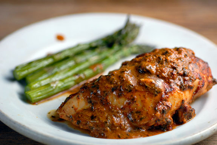 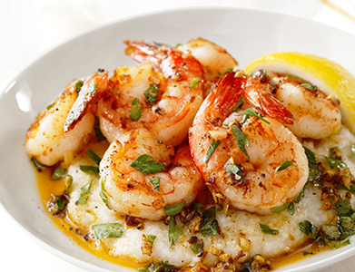Click on the Image to Reveal the Recipe
 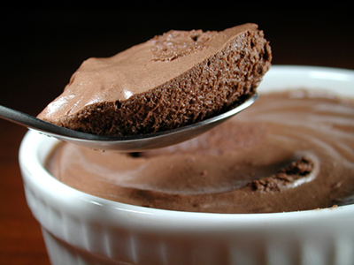
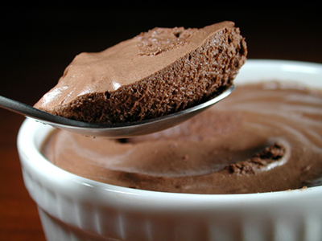
2 cups fresh arugula
2-3 campari or cocktail style tomatoes, sliced
½ avocado, pitted and sliced
3 slices fresh mozzarella cheese
fresh basil leaves
1 tablespoon extra virgin olive oil (I prefer the fruitiest, lightest flavored)
1½ teaspoons balsamic vinegar
generous pinch of sugar or dollop of honey
kosher salt and freshly ground black pepper
Assemble the arugula, tomato, avocado slices and mozzarella in a serving bowl. Top with torn or slivered basil leaves. Whisk the extra virgin olive oil in a small bowl with the balsamic vinegar, sugar or honey and season with kosher salt and freshly ground black pepper to taste and pour over the salad. Toss to coat and serve.
1 package (8 ounces) cream cheese, softened
1 can (10 ounces) chunk white chicken, drained
1/2 cup buffalo wing sauce
1/2 cup ranch salad dressing
2 cups (8 ounces) shredded Colby-Monterey Jack cheese
French bread baguette slices, celery ribs or tortilla chips, optional
Preheat oven to 350°. Spread cream cheese into an ungreased shallow 1-qt. baking dish. Layer with chicken, wing sauce and salad dressing. Sprinkle with cheese. Bake, uncovered, 20-25 minutes or until cheese is melted. If desired, serve with baguette slices. Yield: about 2 cups.
1/2 cup olive oil
2 garlic cloves, chopped
1/2 cup freshly grated Parmesan
2 tablespoons chopped fresh Italian parsley leaves
1/2 teaspoon salt
6 ears yellow corn, husked, halved crosswise
Heat the oil in a heavy small skillet over medium heat. Add the garlic and saute until tender and fragrant, about 1 minute. Remove the skillet from the heat and cool. Set aside 2 tablespoons of the Parmesan cheese and stir the rest into the garlic mixture, along with the parsley and salt. Cook the corn in a large saucepan of boiling salted water until crisp-tender, about 5 minutes. Using tongs, transfer the corn to a platter. Brush the cheese mixture over the hot corn and serve. Sprinkle the remaining 2 tablespoons of cheese on top of the corn.
2 cups drained well-cooked or canned chickpeas, liquid reserved
1/2 cup tahini (sesame paste), optional, with some of its oil
1/4 cup extra-virgin olive oil, plus oil for drizzling
2 cloves garlic, peeled, or to taste
Salt and freshly ground black pepper to taste
1 tablespoon ground cumin or paprika, or to taste, plus a sprinkling for garnish
Juice of 1 lemon, plus more as needed
Chopped fresh parsley leaves for garnish
Put everything except the parsley in a food processor and begin to process; add the chickpea liquid or water as needed to allow the machine to produce a smooth puree. Taste and adjust the seasoning (I often find I like to add much more lemon juice). Serve, drizzled with the olive oil and sprinkled with a bit more cumin or paprika and some parsley.
1/2 pound boneless skinless chicken breast
1 small onion, chopped
1/2 cup sliced fresh carrot
1 small zucchini, sliced
1 small yellow summer squash, sliced
2 garlic cloves, minced
1/4 teaspoon pepper
1/8 teaspoon salt
2 tablespoons shredded Asiago cheese
Place bread crumbs in a large resealable plastic bag. Add chicken and shake to coat. In a large skillet coated with cooking spray, cook chicken in 1 teaspoon oil over medium heat until juices run clear. Remove and keep warm. In the same skillet, saute onion and carrot in remaining oil until crisp-tender. Add the zucchini, squash, garlic, pepper and salt; saute 4-5 minutes longer or until vegetables are tender. Return chicken to pan; sprinkle with cheese.
4 pearl tomatoes, sliced in half & squeezed
2 cloves garlic, chopped
1/2 medium red onion, chopped
1 lb ground turkey
4 oz feta cheese, chopped
1 large egg
1/3 cup bread crumb (or oats)
1 tbs olive oil
sea salt & ground pepper to taste
In a food processor, chop the tomatoes, garlic, onion and basil. In a large bowl, using a rubber spatula, gently combine all of the ingredients (tomato mixture with everything else). Go light on the salt since the feta compliments this dish so well. Form your patties and place them on wax or parchment paper. Remember, they do shrink a bit, so don't form them too small. Heat a grill pan on medium high heat. When pan is hot, add the patties. Reduce heat to medium low or low, and cook about 5 minutes on each side (more if they are thick).
1⁄4 cup lemon juice
1⁄4 cup vegetable oil
1⁄4 cup dijon-style mustard
2 teaspoons brown sugar
1 teaspoon salt
1⁄4 teaspoon pepper
6 chicken breasts
Combine lemon juice, oil, mustard, sugar, salt and pepper. Place chicken in single layer in non-aluminum baking dish.Pour lemon-mustard marinade over chicken. Turn to coat. Refrigerate, covered 30-45 minutes, turning once. Broil chicken on broiler pan with oven rack 5 inches from heat for 25-30 minutes or until no longer pink. Turn and baste every 5 minutes while cooking.
3 cups chicken broth
1 cup uncooked quick-cooking grits
1/4 teaspoon freshly ground pepper
2 tablespoons butter
2 cups (8 ounces) shredded Cheddar cheese
6 slices bacon, chopped
2 pounds medium shrimp, peeled and deveined
1 tablespoon fresh lemon juice
2 teaspoons Worcestershire sauce
6 green onions, chopped
2 garlic cloves, minced
Bring chicken broth to a boil over medium-high heat; stir in grits. Cook, stirring occasionally, 5 to 7 minutes or until thickened. Remove from heat; stir in salt and next 3 ingredients. Set aside, and keep warm. Cook bacon in a large nonstick skillet over medium-high heat 3 minutes or until crisp; remove bacon from pan. Cook shrimp in same pan over medium-high heat 3 minutes or until almost pink, stirring occasionally. Add lemon juice and next 4 ingredients, and cook 3 minutes. Stir in bacon. Spoon grits onto individual plates or into shallow bowls; top with shrimp mixture. Serve immediately.
2 cups low fat ricotta
1/4 cup egg whites or one egg
1/4 cup plain flour/gluten free flour
2-3 tbsp honey/maple syrup
1 cup berries (fresh or frozen)
Preheat oven to 200°C/395°F. In a bowl, combine all of your ingredients except the blueberries. Divide the blueberries among each of the ramekins**, adding just enough to cover the bottom. Pour your ricotta mixture over the top of the blueberries. Bake until set and the ricotta starts to turn golden. Serve warm in ramekins or chill in the fridge.
4 medium ripe but firm bananas
8 wooden craft sticks
3 tablespoons finely chopped lightly salted peanuts
6 ounces good quality dark chocolate (60 to 70 percent cocoa solids), chopped
Peel, then cut each banana in half crosswise and insert a craft stick into each half. Place on a tray, cover with plastic wrap and place in the freezer until frozen, about 3 hours.Place the peanuts in a shallow dish or on a plate. Melt the chocolate in the top of a double boiler over slightly simmering water, over the lowest possible heat, stirring frequently. Make sure the water is not touching the bottom of the top pan. Pour the melted chocolate into a tall glass. Dip each frozen banana into the chocolate, turning it to coat, and immediately roll in the peanuts. Place on a tray covered in waxed paper. Serve immediately or wrap individually in plastic wrap or waxed paper and freeze for up to 2 weeks.
2 cups chilled heavy cream
4 large egg yolks
3 tablespoons sugar
1 teaspoon vanilla
7 oz fine-quality bittersweet chocolate
Heat 3/4 cup cream in a 1-quart heavy saucepan until hot. Whisk together yolks, sugar, and a pinch of salt in a metal bowl until combined well, then add hot cream in a slow stream, whisking until combined. Transfer mixture to saucepan and cook over moderately low heat, stirring constantly, until it registers 160°F on thermometer. Pour custard through a fine-mesh sieve into a bowl and stir in vanilla. Melt chocolate in a double boiler or a metal bowl set over a pan of simmering water (or in a glass bowl in a microwave at 50 percent power 3 to 5 minutes), stirring frequently. Whisk custard into chocolate until smooth, then cool. Beat remaining 1 1/4 cups cream in a bowl with an electric mixer until it just holds stiff peaks. Whisk one fourth of cream into chocolate custard to lighten, then fold in remaining cream gently but thoroughly. Spoon mousse into 8 (6-ounce) stemmed glasses or ramekins and chill, covered, at least 6 hours. Let stand at room temperature about 20 minutes before serving.
4 large baking apples, such as Honeycrisp
4 tablespoons (1/2 stick) butter, softened
1/2 cup brown sugar
3/4 teaspoon cinnamon
1/4 cup chopped pecans
Preheat the oven to 375 degrees F. Wash and core apples, leaving enough of the core at the base of the apple to contain the filling. Combine the butter, brown sugar, cinnamon and chopped pecans in a small bowl. Roll log shapes of the mixture and press enough into each apple to fill the core. Fill a 2-quart baking dish with about 3/4 cup water, or enough to cover the bottom. Place the apples upright in the dish. Bake until the apples are soft and the filling is browned, 1 hour.